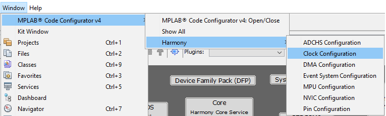
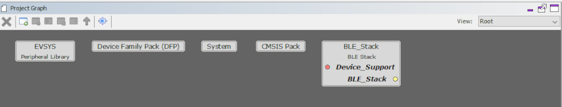
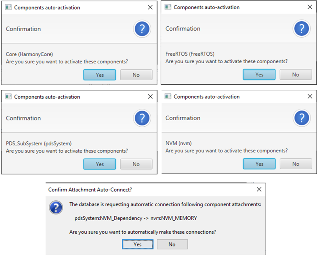
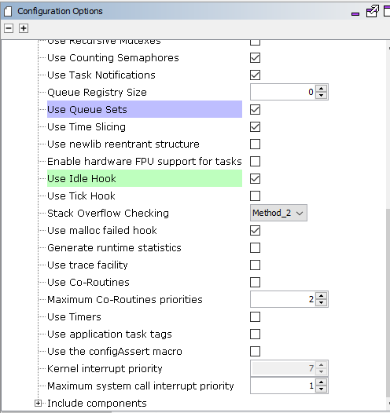
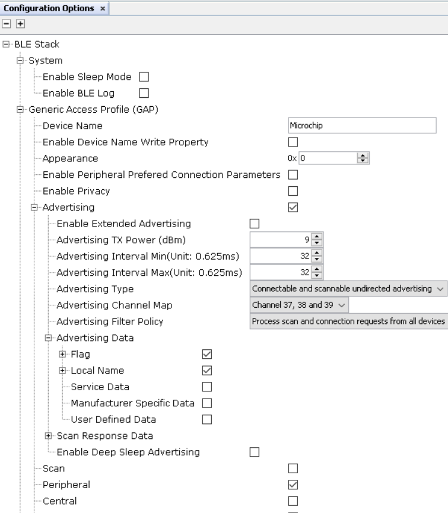
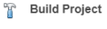

4.1.2.1 Peripheral - FreeRTOS BLE Stack and App Initialize
Getting Started with Peripheral Building Blocks
FreeRTOS and BLE Stack Setup --> Adding UART --> Legacy Advertisements(sleep)
Introduction
This document will help users create a new MCC Harmony project, configure FreeRTOS component and BLE stack component in the project and generate code using the MPLAB Code Configurator.
It is recommend to follow the examples in order, by learning the basic concepts first and then progressing to the more advanced topics.
Recommended Reading
Hardware Requirement
None
Software Setup
Steps to Init BLE Stack
This section explains the steps required by a user to develop this application example from scratch using MPLABx Code Configurator.
Tip: It is recommended that new users of MPLAB Code Configurator go through the overview.
Create a new MCC Harmony Project. For more details on creating a new MCC Harmony Project, refer to 3.6 Creating a new MCC Harmony Project .
Open MPLAB Code Configurator.
Default MPLAB Code Configurator window

In Available component window, expand Wireless > BLE and click plus symbol the BLE stack component on to the project graph
Upon BLE Stack being added to project graph, the different component dependencies will be requested to be added. User has to select yes to add the dependant component
Activate the components and select yes
- Verify Project Graph

- Display FreeRTOS component configuration options by Selecting the component in Project Graph. Configure FreeRTOS component to the following. The configuration chosen here must suit most application needs. Users are recommended to follow the FreeRTOS Customization documented in Customization, accordingly.Note: Upon selecting any component, the default configuration options available for user are displayed.
Figure 4-36. . 
Figure 4-37. .  Display BLE Stack component configuration options by Selecting the component in Project Graph.
Default Configuration: Peripheral Device functionality is enabled by default.
Switch to IDE window, right click on project and open Project Properties
Ensure correct compiler version as suggested inGetting Started with Software Development is chosen
Build Project, upon building project user action is required as mentioned here
Build Project. The project will compile successfully.
